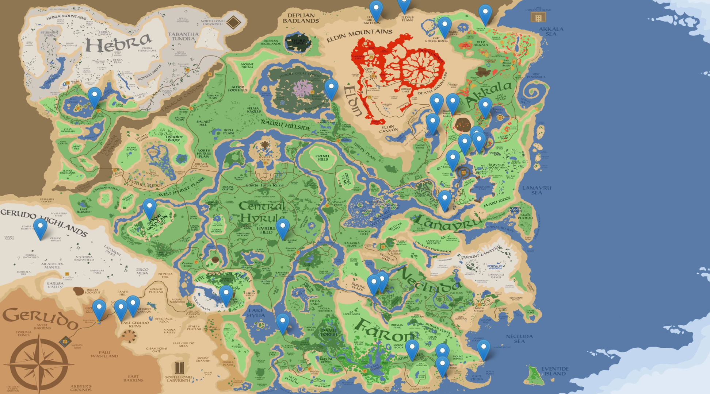

Mapa de Hyrule
Explora Hyrule
Video mostrando las hermosas vistas y principales atracciones de Hyrule,
incluyendo panoramas naturales y actividades culturales.
Descripción auditiva del video que muestra los paisajes y actividades en
Hyrule, proporcionando contexto y detalles visuales en formato de audio.
Actividades para realizar
| Actividad | Ubicación | Duración | Hora de Comienzo (24h) |
|---|---|---|---|
| Pesca en el Lago Hylia | Lago Hylia | 3 horas | 09:00 |
| Escalada en el Pico Nevado | Pico Nevado | 4 horas | 08:00 |
| Paseo en bote por el Río Zora | Río Zora | 2 horas | 10:00 |
| Visita al Templo del Tiempo | Templo del Tiempo | 1 hora | 12:00 |
| Clases de combate con espada en el Castillo de Hyrule | Castillo de Hyrule | 2 horas | 15:00 |
| Recorrido nocturno por el Bosque Perdido | Bosque Perdido | 3 horas | 19:00 |
| Búsqueda de hierbas y alquimia en Kakariko | Villa Kakariko | 1.5 horas | 14:00 |
| Gastronomía en Lon Lon Ranch | Lon Lon Ranch | 2 horas | 13:00 |
| Safari fotográfico en el Desierto de Gerudo | Desierto de Gerudo | 3 horas | 17:00 |
| Taller de música con los Kokiri | Bosque Kokiri | 2 horas | 11:00 |
Esta tabla lista las actividades disponibles en Hyrule, incluyendo detalles sobre la ubicación, duración
y hora de comienzo de cada actividad. Cada actividad ofrece una experiencia única en distintos lugares
de Hyrule.